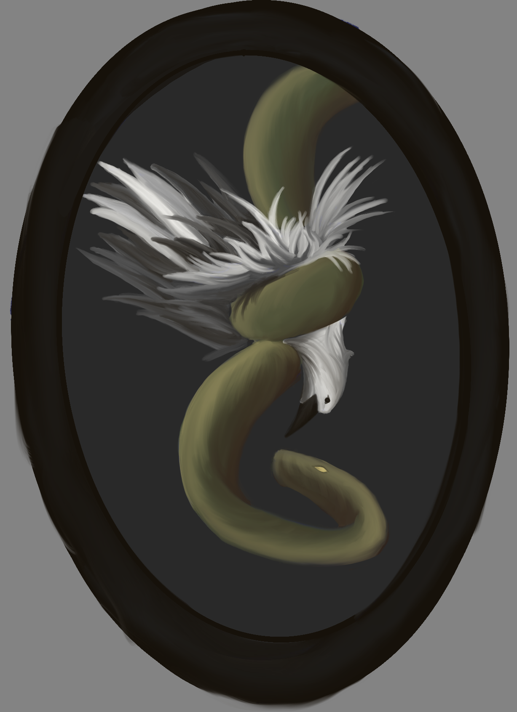

Learn to design using a variety of mediums, from digital art to traditional paper techniques, and even explore the world of comic-style illustration. No matter your skill level, there's always something new to discover! We're always open to new ideas and ways we can better everyones experience while using the website so always feel free to speak your mind! Let's get creating!
Welcome to My Creative Space! 🎨✨
Hey y'all! I'm tinytomato, and ever since I was little, I've loved drawing. As I got older, my passion for art grew, and in high school, I discovered a love for creating comics. Now, whenever I find the time, I continue to draw, experiment, and refine my craft. There's something magical about bringing ideas to life, whether it's through a single sketch or an entire story told in panels. This website is where I keep every part of my artistic journey—from new ideas and techniques to my latest drawings and insights. I hope it becomes a space where creativity flows, inspiration sparks, and we can all learn and grow together. Art is all about expression, storytelling, and having fun, and I want this space to reflect that. So whether you're here for tips, motivation, or just to enjoy some art, I’m excited to share what I’ve learned with you. Stay tuned for fresh content, behind-the-scenes looks, and lots more to come! Happy drawing! ✏️💛